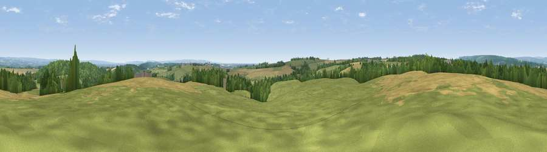

Viewpoint near Coulton
#12486 in England · top 25% of its area beats it · near CoultonWhere it is
The exact computed spot (SE 62875 74025). Click the marker for map links.
The view, rendered

A 360° render of this exact spot computed from the terrain model, tree cover and land cover — summer colours, afternoon light, calibrated against photographs of famous viewpoints. Real trees, hedges and buildings will differ in detail.
The panorama
Grey silhouette: terrain skyline in each direction (720 bearings, Earth curvature and refraction included). Dashed green: skyline with trees (+15 m) and buildings (+8 m) as obstacles. Blue strip: how far the ground is visible on each bearing.
Where the view opens
Wedge length = distance to the farthest visible ground on that bearing (vegetation-aware). Rings at 10, 25 and 50 km.
What fills the view
44% grassland · 34% cropland · 21% woodland
Angular shares of the visible panorama (visual magnitude), not map area. Landscape diversity 0.47 (0–1 Shannon).
Key numbers
More beautiful places nearby
The staircase of upgrades: each row has a higher view potential than everything closer. Driving times are estimates from straight-line distance, calibrated against real road routing — check an actual route before setting out.
| Place | Direction | Drive | Score |
|---|---|---|---|
| Viewpoint near Whenby | S · 3 km | ~6 min | 63.8 |
| Viewpoint near Brandsby | WSW · 3 km | ~8 min | 71.8 |
| Viewpoint near Ampleforth | NNW · 6 km | ~13 min | 76.6 |
| Viewpoint near Kilburn | WNW · 14 km | ~25 min | 79.3 |
| Hood Hill | WNW · 14 km | ~26 min | 79.6 |
| Viewpoint near Thirlby | NW · 15 km | ~27 min | 81.5 |
| White Hill | N · 30 km | ~47 min | 84.2 |
| Viewpoint near Great Broughton | NNW · 30 km | ~47 min | 84.4 |
54.15820, -1.03866 · source: screening · position refined by local search. Computed location — check access rights before visiting.